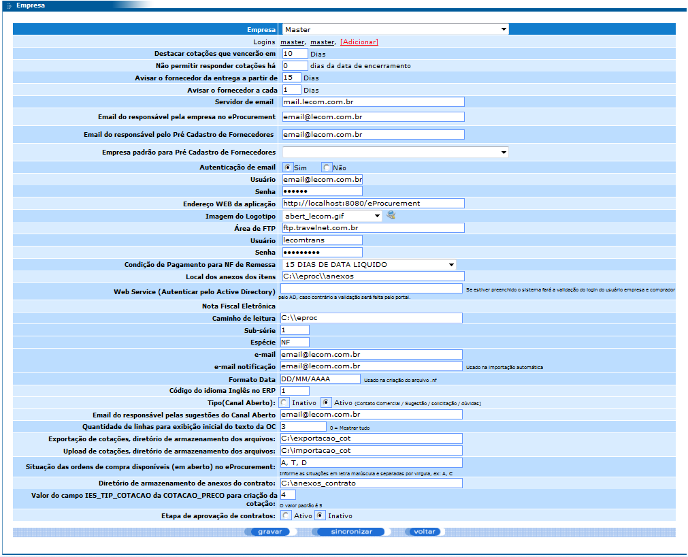

Documentação do Cliente - eProcurement
Este recurso permite a configuração de todas as empresas existentes no banco de dados, basta selecionar a empresa desejada no campo Empresa. Por meio desta tela é possível configurar, por exemplo, os usuários e suas respectivas senhas para acesso à ferramenta, o logotipo da empresa, o e-mail do responsável pela empresa no e-Procurement, etc.
Destacar cotações que vencerão em X dias: na listagem de cotações (módulo clientes), as cotações que vencerão daqui a X dias (neste exemplo, 10 dias) serão destacadas com a cor amarela.
Não permitir responder cotações X dias da data de encerramento: após o número de dias determinado, levando em consideração como data de início a data do encerramento
Avisar o fornecedor da entrega a partir de X dias da data de encerramento: a rotina de envio de e-mails enviará um e-mail para o fornecedor avisando a data da entrega do pedido com X dias de antecedência.
Avisar fornecedor a cada X dias.
Servidor de email: endereço do servidor de email que será utilizado para envio de emails no sistema.
Email do responsável pela empresa no eProcurement: email utilizado como remetente no envio de algumas notificações do sistema.
Email do responsável pelo Pré Cadastro de Fornecedores: email que aparece para o fornecedor ao concluir o pré-cadastro no eProcurement.
Empresa padrão para Pré Cadastro de Fornecedores: empresa padrão utilizada no pré-cadastro do fornecedor.
Autenticação de email: define se o servidor de e-mail exige autenticação do usuário. Se estiver "sim", o sistema fará a autenticação.
Usuário: usuário para autenticação no servidor de email.
Senha: senha para autenticação no servidor de email.
Endereço WEB da aplicação: endereço de acesso ao eProcuremente. Utilizado nos emails para colocar o link de acesso ao eProcurement.
Imagem do Logotipo: imagem que será exibida na página de login da ferramenta.
Área de FTP: se houver integração de Notas com o Logix (COM0019 ou SUP0552), deve ser configurado o FTP. O eProcurement grava neste FTP os arquivos das NFs que o Logix vai importar.
Condição de pagamento para NF de remessa: esta é a condição de pagamento padrão que será utilizada quando o fornecedor for gerar uma nota fiscal de remessa.
Usuário: usuário para autenticação na área de FTP.
Senha: senha para autenticação na área de FTP.
Condição de Pagamento para NF de Remessa: campo utilizado na digitação da Nota Fiscal. Se a NF que está sendo digitada for uma nota fiscal de remessa, a condição de pagamento da nota será fixada com a condição de pagamento informada neste campo.
Local dos anexos dos itens: descreve os locais que os anexos dos itens serão salvos.
Web Service (Autenticar pelo Active Directory): se estiver preenchido o sistema fará a validação do login do usuário empresa e comprador pelo AD, caso contrário a validação será feita pelo portal.
Nota Fiscal Eletrônico
Caminho de Leitura: caminho onde se encontra os arquivos XML da NFe. Deve ser um diretório no próprio servidor do eProcurement ou um diretório na rede acessível pelo servidor eProcurement.
Sub-série: Valor fixo que será gravado nas NFs importadas pela rotina de importação automática.
Espécie: valor fixo que será gravado nas NFs importadas pela rotina de importação automática.
Email: após fazer o upload da NFe pelo portal, o XML é enviado para o email informado neste campo.
Email notificação: na importação automática, após o processamento do XML, é enviada uma notificação para esse email com o status da importação dos XMLs (Sucesso ou Erro).
Formato Data: usado na criação do arquivo “.nf”. Exemplo: “AAAAMM-DD HH:MM:SS”.
Código do idioma Inglês no ERP: código do idioma Inglês cadastrado no Logix. Utilizado para mostrar informações do item em inglês.
Tipo (Canal Aberto): indica se no Canal Aberto haverá a opção para o fornecedor enviar sugestões e dúvidas sobre o eProcurement.
Email do responsável pelas sugestões do Canal Aberto
Quantidade de linhas para exibição inicial do texto da OC (0 = Mostrar tudo).
Exportação de cotações, diretório de armazenamento dos arquivos (Diretório previamente criado).
Upload de cotações, diretório de armazenamento dos arquivos (Diretório previamente criado).
Situação das ordens de compra disponíveis (em aberto) no eProcurement: descrever quais letras serão simbolizarão situações válidas na ferramenta. Exemplo: “A, B, C”.
Diretório de armazenamento de anexos do contrato
Valor do campo IES_TIP_COTACAO da COTACAO_PRECO para criação da cotação
Etapa de aprovação de contratos: “ativo” ou “inativo” identifica se a etapa de aprovação de contratos fará parte do processo ou não.